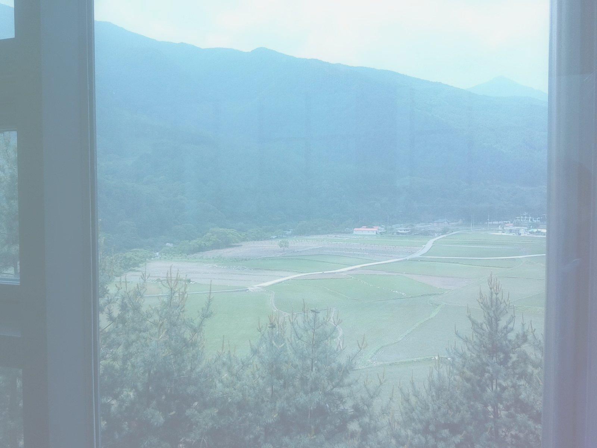
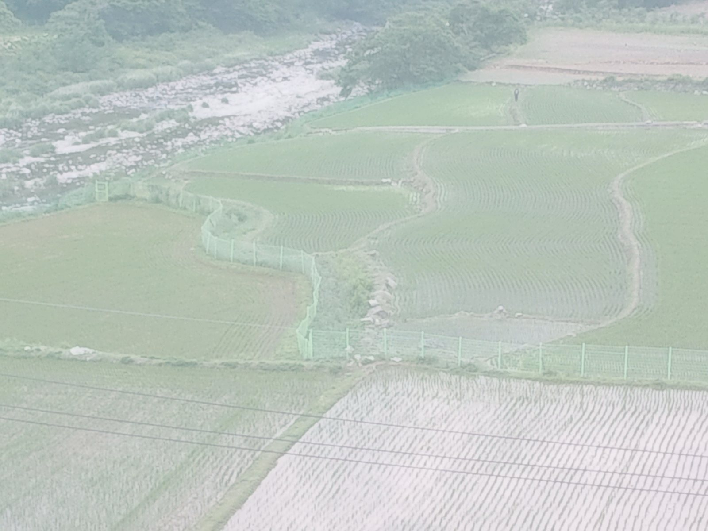
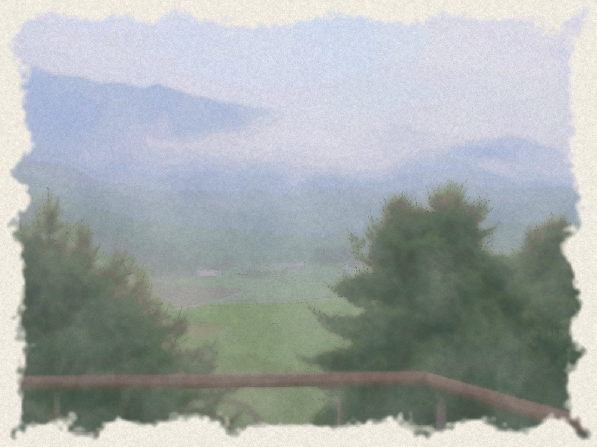
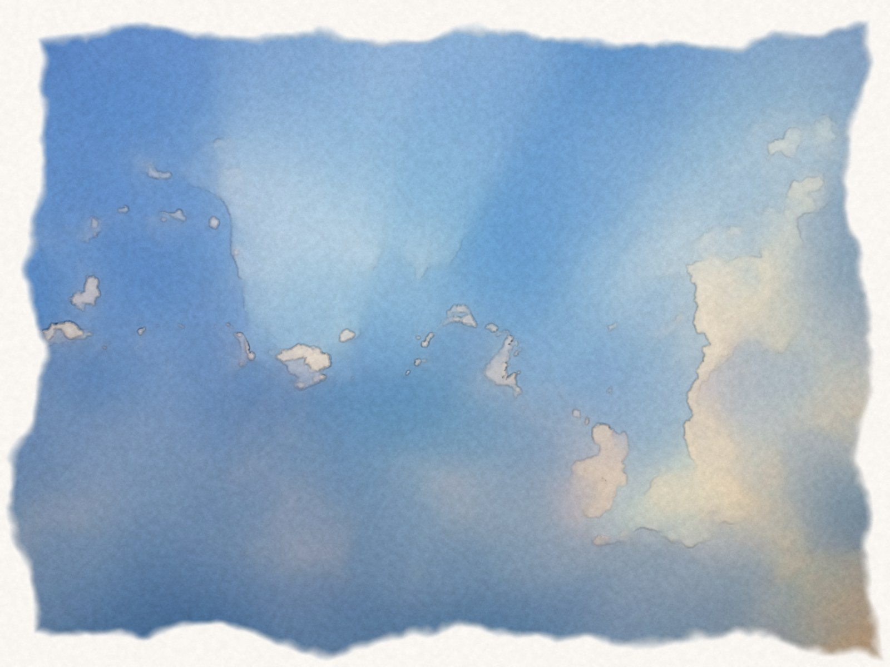
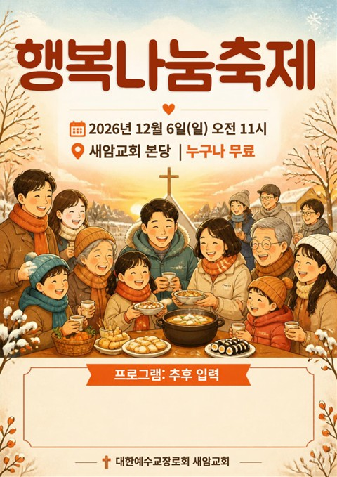

좋은 이야기를 골라, 새 문장으로
새로 쓴 예화 9,718편 · 주제별로 보기 →온라인에 공개된 감동적인 예화와 글, 그리고 제가 읽은 책의 독후감에서 설교에 쓸 만한 이야기를 골라 사실을 확인하고 새 문장으로 다시 썼습니다. 편마다 적용과 개역개정 말씀을 붙이고, 원글의 저자와 출처를 밝혀 두었습니다. 짧았던 예화는 사실을 더 확인해 15문장 안팎의 넉넉한 이야기로 다시 쓰고 있으며, 지금까지 940편을 고쳤습니다.
- 4,899온라인에 공개된 감동적인 예화
- 2,420온라인에 공유된 감동적인 글
- 4온라인에 공유된 아름다운 글
- 1,763신문·잡지에 실린 글
- 317독후감
- 315역사와 고전
- 【도전】
예순에 시작한 인생 이모작
김필곤 목사가 조선일보 1996년 11월 2일자 기사를 바탕으로 소개한 「재취업 60대」라는 이야기입니다. 고일남 씨는 예순한 살에 정년퇴직을 했습니다.
온라인에 공개된 감동적인 예화에서 - 【믿음】
회색 바지와 푸른 윗도리
「회색 바지와 푸른 윗도리」라는 제목으로 전해 오는 이야기입니다. 미국 남북전쟁 때, 남부와 북부의 경계선에 사는 한 남자가 있었습니다.
온라인에 공유된 감동적인 글에서 - 【만족】
위암 환자에게 보낸 행복 편지
서울 세브란스병원에 입원한 한 위암 환자에게 보낸 편지의 내용입니다. 편지를 쓴 사람은 먼저 행복에 관해 이야기합니다.
온라인에 공유된 감동적인 글에서 - 【사랑】
홀트 가족의 좁은 길
「낮은 울타리」 2002년 10월호에 실린 「사랑하기에 택했던 좁은 길」이라는 글로, 홀트 가족의 이야기입니다.
신문·잡지에 실린 글에서 - 【은혜】
양자 삼으신 은혜
미국 콘코디아 출판사가 1996년에 펴낸 경건 묵상집 『약속의 말씀』에 실린 「양자 됨」이라는 글입니다.
온라인에 공개된 감동적인 예화에서 - 【인내】
해로 학교의 처칠 연설
인내를 주제로 한 설교에 자주 인용되는 윈스턴 처칠의 해로 학교 연설 이야기입니다. 해로는 런던 북서쪽 언덕 위에 있는 영국의 명문 사립 중등학교입니다.
온라인에 공개된 감동적인 예화에서
설교에 쓰는 이야기
블로그 예화 목차 →가 편 · 2,571편
사 편 · 2,886편
아 편 · 1,877편
블로그에 올린 예화 글 보기
날마다 한 편씩
글 보관함 2450편 →-
출32장
아론은 왜 백성을 방자하게 하였는가
본문: 아론은 왜 백성을 방자하게 하였는가? 본문:출32:21-25 새암교회금요기도회 2021년 1월 29일(금) 우상 숭배의 어리석음 하나님께…
-
전3장
하나님이 이 땅에서 주신 선물
본문: 이 땅에서 주신 하나님의 선물 본문:전3:12-14 새암교회주일낮예배20021년 5월 15일(스승의 주일) 오늘은 스승의 주일입니다. 인…
-
삼상24장
옷자락을 베고 마음에 찔리니라
다윗은 어떻게 자신을 그토록 괴롭히고 죽이려 하는 사울의 옷자락만을 베고도 오히려 마음이 찔렸을까요? 우리는 나를 괴롭히는 사람에 대하여 참지…
-
마21장
나귀 새끼를 타신 다윗의 자손
고통을 아는 영혼 환란은 성장의 법칙이요 우리의 신앙은 이 세계의 폭풍우와 긴장 속에서 만들어진다. 뷔엔나의 어떤 유명한 음악 교사가 자기 문하…
-
왕상1-18장
두 번씩이나 나타나셨다
많은 것에서 오는 교만 농촌에 교회가 세워지고 예수 믿는 사람들의 생활을 본 그 동네 유지 한 사람이 예수를 믿기로 작정하고 나온지 얼마 지나지…
-
사사기7장
보리떡 한 덩이 기드온
기드온은 300용사로 유명합니다. 300이라는 영화와는 다른 인물입니다. 아니 전혀 다른 스토리입니다. 영화 **<300>**은 기원전 480년…
구약 39권
신약 27권
66권 가운데 58권을 설교했습니다. 이름 옆의 숫자는 설교 편 수이고, 이름을 누르면 그 권의 설교 목록이 열립니다.
들으면서 읽는 성경
채널 바로가기 · 영상 43편 →창세기부터 요한계시록까지 성경 66권 전 장을 음악으로 만드는 통독 프로젝트입니다. 자막의 말씀을 따라 읽거나, 큐티와 기도 시간에 틀어 두고 들을 수 있습니다.


시와 찬양시
안식월 시집 314편 →



안식월 시집 314편
안식월과 기도원에서 쓴 시를 한 권으로 엮었습니다. 그 자리에서 찍은 사진과 함께 읽어 보세요.
시집 펼치기 →자연시
50편자연을 노래하다
- 가을 나무짓 푸름 옷 벗고 잿빛 낙엽 외투로 갈아입은 가을 나무 외출복 벗고 잠옷 입듯 그렇…
- 단풍(丹楓)북풍(北風) 대낮 아직 열기 머금은 대지(大地) 중병(重病) 걸려 숨 떨어진 입새…
- 매미초가을 한 풀 꺽인 매미의 울음 ‘나 오늘 밤이 마지막이라오’ ‘내 하소연 들어 주…
생활시
67편삶의 자리에서
- 주고 잡아서기뚱기뚱 꼬무락 꼬무락 어무이의 서툰 손놀림 아들 주고 잡아 씨암탉 다듬고 마늘 듬…
- 아버지 자리아버지가 앉던 식탁에 앉으니 어무이 차려 내 받은 밥상 아버지 자리 소파 앉아 쉬던…
- 친구더워 옷 벗어 어깨 맨 것 아니오 비 두려워 우산 집어든 것 아니라니까 손 허전해…
안식월 묵상 37편
천천히 · 억지로라도 드리는 사람 · 율법은 울타리다 · 오순절을 기다리는 마음 · 제일 열심히 · 애통의 기도 …
묵상 노트 펼치기 →- 42
몰랐습니다
나는 늘 바른 말을 했습니다. 진취적이고 적극적이었습니다. 좋은 의견을 냈고, 창의적인 생각을 앞서 말했습니다. 아이디어 뱅크…
- 42
사역자의 자세
우리는 희생하면 안 된다. 드려야 한다. 사역자와 목사는 희생이나 헌신을 하는 것이 아니다. 주님의 십자가로 구속받은 내 몸과…
- 41
문학가의 자세
2012년 9월 14일 문학가들이 작품에 자신의 생각을 넣지 않는다고 한다 나는 나의 작품에 내 생각을 강하게 넣는다 집요하게…
- 40
작은 교회들의 생존법
2012년 9월 13일(목) 작은 교회들이 사는 법은 큰 교회들의 반대로 하면 된다. -돈 주고 방송 출현하지 않기 -돈 주고…
- 39
두려워하라
두려워하지는 말되 두려움 자체를 피하지는 말라. 두려움은 믿음을 낳는다. 큰 두려움은 큰 믿음을 낳고 작은 두려움은 작은 믿음…
- 38
1월에
오색찬란 단풍 즐기는 새 혹한의 겨울 준비 한창인 나무 한겨울 한파에도 벌써 싹틔울 준비 옷 다 벗어 던지고 바람 적게 맞으려…
읽은 책, 남긴 생각
독후감 전체 382편 →만든 것들
- Exodus 엑서더스
e북 「Exodus 엑서더스」
홈페이지에서 읽기 · EPUB 내려받기
행복나눔축제 초대장
2026 전도집회 · 새암교회 본당

행복나눔축제 포스터
A3 인쇄용 · 일러스트
- 태초에 말씀이
찬양 「태초에 말씀이」
요한복음 1장 CCM 찬양
- 교단
- 대한예수교장로회(합동)
- 주소
- 경기도 용인시 수지구 고기로 165
(동천동) - 전화
- 031-262-3440
- 주일예배
- 1부 오전 9시
2부 오전 11시 - 새벽기도회
- 매일 오전 6시
- 금요기도회
- 금요일 오후 8시 30분